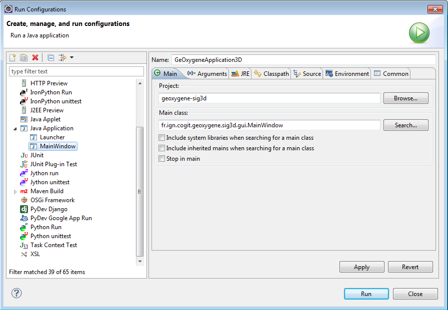
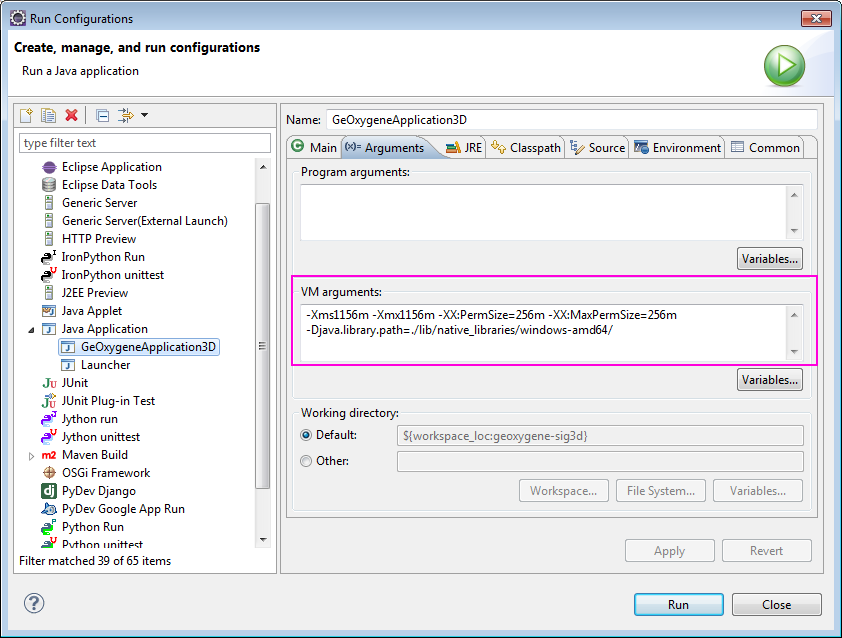

Lancement des interfaces graphiques
Lancement de l’interface graphique 2D depuis Eclipse
Fichier de configuration des plugins
Créer un fichier geoxygene-configuration.xml depuis le fichier template geoxygene-appli/conf/geoxygene-configuration-template.xml et placez-le à la racine du module geoxygene-appli :
E:\Workspace\GeOxygene >> copy geoxygene-appli/conf/geoxygene-configuration-template.xml geoxygene-appli/geoxygene-configuration.xml
Ce fichier contient l’ensemble des plugins lancés au démarrage de l’application. Pour en ajouter ou supprimer il suffit de modifier ce nouveau fichier.
<?xml version="1.0" encoding="UTF-8" standalone="yes"?> <GeOxygeneApplicationProperties> <plugin>fr.ign.cogit.geoxygene.appli.plugin.datamatching.NetworkDataMatchingPlugin</plugin> <plugin>fr.ign.cogit.geoxygene.appli.plugin.datamatching.DataMatchingPlugin</plugin> <plugin>fr.ign.cogit.geoxygene.appli.plugin.cartetopo.BuildingBlocksCreationPlugin</plugin> <plugin>fr.ign.cogit.geoxygene.appli.plugin.cartetopo.ImportAsEdgesPlugin</plugin> <plugin>fr.ign.cogit.geoxygene.appli.plugin.BezierCurvePlugin</plugin> <plugin>fr.ign.cogit.geoxygene.appli.plugin.TINPlugin</plugin> <plugin>fr.ign.cogit.geoxygene.appli.plugin.CubicSplinePlugin</plugin> <plugin>fr.ign.cogit.geoxygene.appli.plugin.TriangulationJTSPlugin</plugin> <plugin>fr.ign.cogit.geoxygene.appli.plugin.CharacteristicShapeJTSPlugin</plugin> <plugin>fr.ign.cogit.geoxygene.appli.plugin.VoronoiDiagramJTSPlugin</plugin> <plugin>fr.ign.cogit.geoxygene.appli.plugin.SwingingArmPlugin</plugin> <plugin>fr.ign.cogit.geoxygene.appli.plugin.script.GroovyConsolePlugin</plugin> <plugin>fr.ign.cogit.geoxygene.appli.plugin.semio.SemioPlugin</plugin> <plugin>fr.ign.cogit.geoxygene.appli.plugin.cartagen.CartAGenPlugin</plugin> <plugin>fr.ign.cogit.geoxygene.appli.plugin.osm.OSMPlugin</plugin> </GeOxygeneApplicationProperties>
Lancement
Dans le menu, cliquer sur
Run >> Run Configurations
Sélectionner comme type de run “Java Application”, puis faire un click droit et sélectionner “New”
Configurer les éléments suivants :
3.1 Dans la partie “Main”
Name : GeOxygeneApplication
Project : geoxygene-appli
Main class : fr.ign.cogit.geoxygene.appli.GeOxygeneApplication

Figure 1 - Lancement de l’interface graphique 2D

- Cliquer sur Run, l’interface de GeOxygene 2D est lancée !
{kind=link}
Figure 3 - Interface graphique GeOxygene 2D
Lancement de l’interface graphique 3D
Dans le menu, cliquer sur
Run >> Run Configurations
Sélectionner comme type de run “Java Application”, puis faire un click droit et sélectionner “New”
Configurer les éléments suivants :
3.1 Dans la partie “Main”
Name : GeOxygeneApplication3D
Project : geoxygene-sig3d
Main class : fr.ign.cogit.geoxygene.sig3d.gui.MainWindow
Figure 4 - Lancement de l’interface graphique 3D
{kind=link}
3.2 Dans la partie “Arguments”, pour la machine virtuelle :
VM arguments :
- Win (32bits) :
- -Xms1156m -Xmx1156m -XX:PermSize=256m -XX:MaxPermSize=256m -Djava.library.path=./lib/native_libraries/windows-i586/
- Win (64bits) :
- -Xms1156m -Xmx1156m -XX:PermSize=256m -XX:MaxPermSize=256m -Djava.library.path=./lib/native_libraries/windows-amd64/
Figure 5 - Lancement de l’interface graphique 3D
{kind=link}
- Cliquer sur Run, l’interface de GeOxygene 3D est lancée !

Figure 6 - Interface graphique GeOxygene 3D